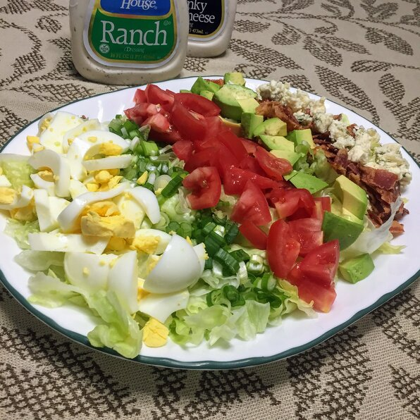

Cobb Salad

Descriptions
This Cobb salad has some of my favorite ingredients: chicken, egg, tomatoes, blue cheese and avocado.
Ingredients
- 6 slices bacon
- 3 eggs
- 1 head iceberg lettuce, shredded
- 3 cups chopped, cooked chicken meat
- 2 tomatoes, seeded and chopped
- ¾ cup blue cheese, crumbled
- 1 avocado - peeled, pitted and diced
- 3 green onions, chopped
- 1 (8 ounce) bottle Ranch-style salad dressing
Directions
- Place eggs in a saucepan and cover completely with cold water. Bring water to a boil. Cover, remove from heat, and let eggs stand in hot water for 10 to 12 minutes. Remove from hot water, cool, peel and chop.
- Place bacon in a large, deep skillet. Cook over medium high heat until evenly brown. Drain, crumble and set aside.
- Divide shredded lettuce among individual plates.
- Evenly divide and arrange chicken, eggs, tomatoes, blue cheese, bacon, avocado and green onions in a row on top of the lettuce.
- Drizzle with your favorite dressing and enjoy.
Home